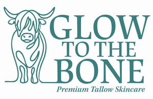

Trade Mark Journal No.2025/035 29 August 2025
UK00004252189 20 August 2025 (3)

- Class 3
- Skincare preparations; face and body creams; moisturizers; tallow-based cosmetics; non-medicated balms for skincare; non-medicated anti-aging preparations; beauty care preparations; body lotions; lip balms; essential oils for cosmetic use; non-medicated preparations for the care of the skin. ; Cosmetics; Non-medicated toiletries; Hair care preparations; Cosmetic preparations for skin care; Facial cleansers; Bath preparations, not for medical purposes; Hand cleaning preparations; Sun creams; Make-up removing preparations; Make-up; Skincare cosmetics; Anti-aging skincare preparations; Anti-aging moisturizers used as cosmetics; Skincare preparations; Moisturisers [cosmetics]; Skin moisturizers used as cosmetics; Anti-aging moisturizers; Anti-ageing moisturiser; Suncare lotions [for cosmetic use]; Cosmetic moisturisers; Anti-ageing creams [for cosmetic use]; Cosmetic products in the form of aerosols for skincare; Moisturising skin lotions [cosmetic]; Anti-aging creams [for cosmetic use]; Beauty serums; Acne cleansers, cosmetic; Facial moisturisers [cosmetic]; Non-medicated skincare preparations; Skin cleansers [cosmetic]; Moisturising skin creams [cosmetic]; Suncare lotions; Beauty serums with anti-ageing properties; Facial creams [cosmetics]; Anti-aging creams; Anti-ageing creams; After-sun oils [cosmetics]; Skin moisturisers; Anti-ageing serums for cosmetic purposes; Skin care lotions [cosmetic]; Beauty lotions; Skin care cosmetics; Skin moisturizer; Skin moisturiser; Skin moisturizers; Skin balms [cosmetic]; Beauty care cosmetics; After-sun lotions [for cosmetic use]; Moisturisers; Skin care creams [cosmetic]; Cosmetic creams for skin care; Skin recovery creams [cosmetics]; Skin creams [for cosmetic use]; Anti-wrinkle creams [for cosmetic use]; Cosmetic creams for the skin; Skin creams [cosmetic]; Facial cleansers [cosmetic]; Cosmetics; Sunscreen creams [for cosmetic use]; Cosmetic nourishing creams; Skin masks [cosmetics]; Skin cleansers; Moisturiser; Moisturizers; Cleansing creams [cosmetic]; Anti-ageing serum; Skin moisturizer masks; Hairstyling serums; Cosmetic facial lotions; Facial lotions [cosmetic]; Non-medicated skin serums; Body and facial creams [cosmetics]; Facial moisturizers; Exfoliants for the care of the skin; Exfoliants for the cleansing of the skin; Cosmetic creams and lotions; Skin care oils [cosmetic]; Moisturising body lotion [cosmetic]; Anti-aging serum for cosmetic use; Beauty creams; Hair care lotions [for cosmetic use]; Beauty balm creams; Skin lotions; Lotions for the skin; Skin fresheners [cosmetics]; Sunscreens [for cosmetic use]; After-sun milks [cosmetics]; Cosmetic massage creams; Skin cleansing lotion; Body creams [cosmetics]; Skin toners [cosmetic]; Sunscreen [for cosmetic use]; Hair care creams [for cosmetic use]; Skin whitening creams; Facial creams [cosmetic]; Facial creams [for cosmetic use]; Tanning oils [cosmetics]; Cosmetic hair lotions; Sun care lotions [for cosmetic use]; Suntan lotion [cosmetics]; Exfoliating creams; Skin cleansers [non-medicated]; After-sun milk [cosmetics]; Skin whitening preparations [cosmetic]; Hair moisturisers; Moisturizing creams; Creams for tanning the skin; Aromatherapy creams; Cosmetics for use in the treatment of wrinkled skin; Cosmetic products for the shower; Organic cosmetics; Skin lotion; Anti-aging cream; Skin cream [for cosmetic use]; Cosmetics for use on the skin; Creams (Cosmetic -); Cosmetic creams; Skin hydrators; Night creams [cosmetics]; Aromatherapy lotions; Skin hydrators for cosmetic purposes; Cleansing lotions; After-sun lotions; Anti-wrinkle creams; Hair care serums; Facial cleansers; Anti-wrinkle cream [for cosmetic use]; Facial gels [cosmetics]; Beauty creams for body care; Exfoliant creams; Cosmetic products in the form of aerosols for skin care; Cosmetic preparations for skin firming; Moisturising creams; Skin creams; Creams for the skin; Colour cosmetics for the skin; Cosmetics for suntanning; Hair moisturizers; Moisturising gels [cosmetic]; Hair cosmetics; Facial lotions; Hydrating creams for cosmetic use; Self-tanning preparations [cosmetic]; Moisturizing preparations for the skin; Non-medicated skin lotions; Creams for firming the skin; Self-tanning preparations [cosmetics]; Skin make-up.
Glow to the Bone Ltd